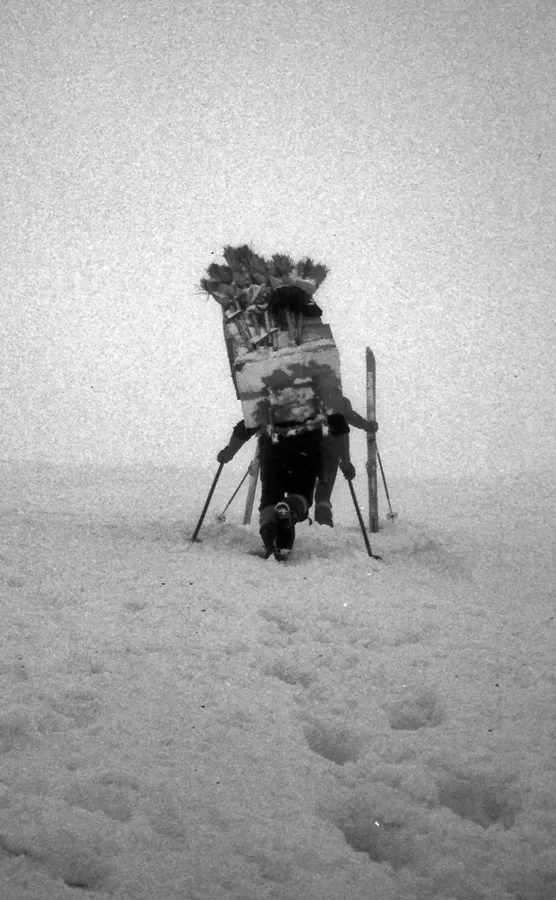

Tekst i audio osobno
Zita, kudłacz i ja
Zita, huňáč a ja
Zimowa droga po oblodzonej ścieżce. Główny bohater, doświadczony góral, spotyka groźnego niedźwiedzia, który odciął drogę kobiecie z psem.
Jego droga splata się z losami innych ludzi, w tym tajemniczej i urzekającej Zity. To opowieść o odwadze, miłości i walce z własnymi granicami.
Płatność i pobranie plików przez Payhip. Payhip otworzy się w nowym oknie.
Fragment tekstu
Leniwa zima. W dzień szalało ciepło, ale w nocy chwyciło. Górski szlak był mocno zarośnięty lodem. Miejscami straszyły długie zamarznięte płyty. Groźba urazu gęstniała z każdym krokiem. Na jednym zakręcie przeraziła mnie ogromna kałuża krwi. Memento dla turystów, ale też dla górali z zawodu. Śliski teren i czyhające demony nie wróżyły nic dobrego. Mimo to dotaszczyłem znoszony ładunek na Hrebienok bez jednego potknięcia. Nagle stanąłem jak przybity gwoździem. Prosto na mnie pędziła stara skoda. Tuż przede mną gwałtownie zahamowała. Nagle wyskoczył z niej facecik i pognał pod górę.
„Dokąd pan tak leci?” – wystrzeliłem w niego pytaniem.
…
Fragment początku polskiego tłumaczenia. Pełnej polskiej wersji jeszcze nie ma w sprzedaży.